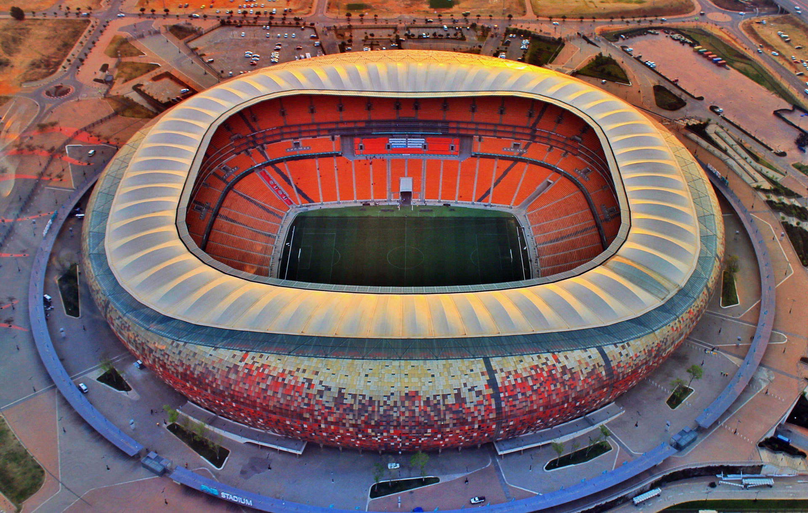
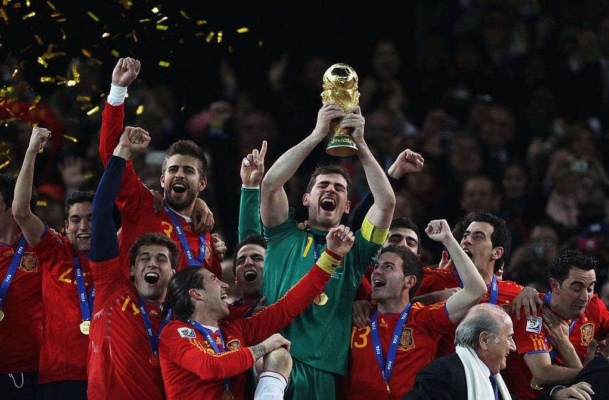

Quando a Copa do Mundo de 2010 foi realizada, o mundo ainda enfrentava os impactos da crise financeira
global de 2008. Nesse cenário, a escolha da África do Sul como sede simbolizou o crescimento da
importância econômica e política do continente africano no século XXI. Pela primeira vez na história,
uma Copa do Mundo era realizada em solo africano, marcando um momento de grande relevância para a
região.br
A África do Sul investiu fortemente em infraestrutura esportiva, transporte e desenvolvimento urbano. Os
investimentos totais ultrapassaram US$ 5 bilhões, destinados à construção de novos estádios,
modernização de aeroportos, ampliação das rodovias e melhoria dos sistemas de transporte público.


O evento representou uma oportunidade para aumentar a visibilidade internacional do país e atrair
investimentos estrangeiros. Além disso, milhões de turistas visitaram a África do Sul durante o torneio,
contribuindo para o crescimento do setor de serviços e do turismo. Embora alguns estádios tenham
enfrentado dificuldades de utilização após o evento, a Copa deixou importantes avanços na infraestrutura
urbana e fortaleceu a imagem da África do Sul como uma das principais economias do continente
africano.
A final foi realizada no Soccer City, em Joanesburgo, diante de aproximadamente 84 mil espectadores. A
seleção da Espanha conquistou seu primeiro título mundial ao derrotar a Holanda por 1 a 0 na
prorrogação.